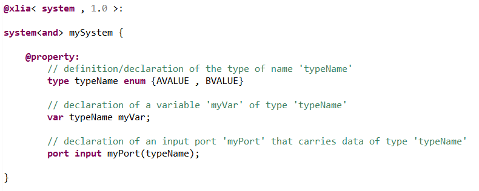
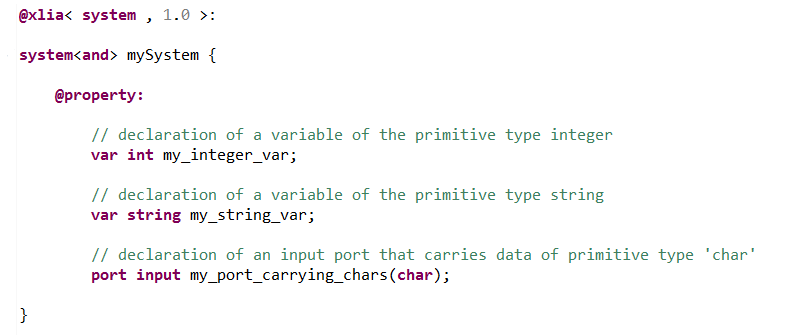
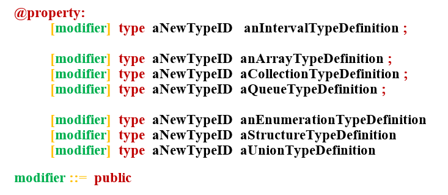

Types can be assigned both to Variables and Ports. They determine the data structure that constitutes the variable or that transit through the port.
A type is assigned to a variable or a port by using it's name as a keyword.
For instance, in what follows, we define a type of name 'typeName' (the definition isn't what matters here), and then we create a variable and a port using that type (this is the point here) :
Diversity provides several primitive types that are known by default by all machines. Those are standard predefined types, signed or not, which represent :
Important remark: those different keywords are not equivalent. For instance the keywords beginning with "u" are used to declared "unsigned" numbers. For instance "int" can be any positive or negative integer whereas "uint" can only be a positive integer.
Here is an example of declaration of variables and ports of a primitive type :
In addition to the primitive types, we can define custom types. Those types can be more complex data structures, build from the union of different primitive types and structures (arrays, queues...).
We declare a new type with the keyword "type". The name given to the type will also be the alias or keyword with which we will be able to build new variables of the newly created type.
Here are some of the different possibilities to create a new type (details will be provided in the following, see also BNF syntax) :
